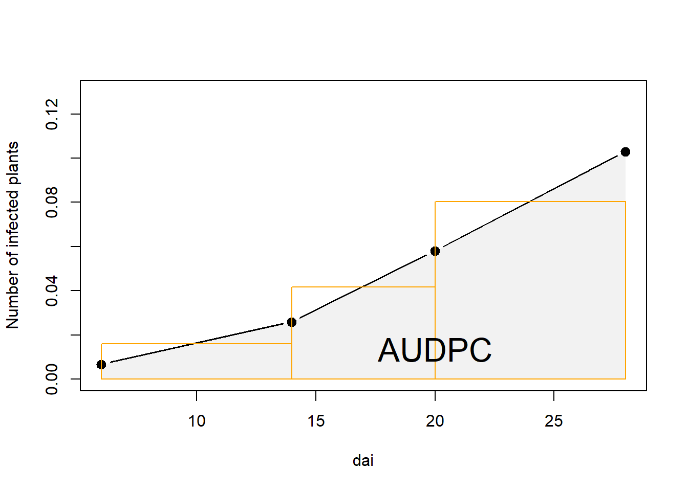
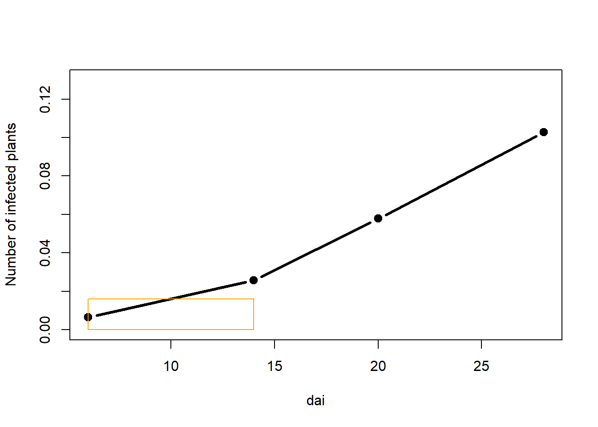
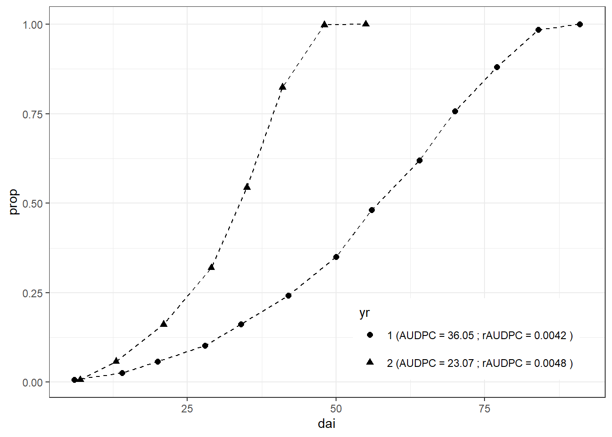

Temporal disease progress: DPC, AUDPC and rAUDPC
Mladen Cucak; Felipe Dalla Lana; Mauricio Serrano; Paul Esker
4/21/2021
How to get most out of this document
We have kept theoretical explanations to a minimum to facilitate learning the basic coding principles and putting them into practice, while increasing knowledge of “coding vocabulary”. The explanations in text are supplemented with comments in the text.
Libraries
Note: Comments are often used throughout the code to explain the code to a potential reader, and, quite often to your future self!
list.of.packages <-
c(
"readxl", # import of data from excel files
"tidyverse",
"gt", #package for customizing html table view
"conflicted", #some functions are named the same way across different packages and there can be conflicts. This package helps to sort out this problem
"here", #helps with the reproducibility across operating systems
"agricolae" #set of functions for agricultural research
)
new.packages <-
list.of.packages[!(list.of.packages %in% installed.packages()[, "Package"])]
#Download packages that are not already present in the library
if (length(new.packages))
install.packages(new.packages)
# Load packages
packages_load <-
lapply(list.of.packages, require, character.only = TRUE)
#Print warning if there is a problem with installing/loading some of packages
if (any(as.numeric(packages_load) == 0)) {
warning(paste("Package/s: ", paste(list.of.packages[packages_load != TRUE], sep = ", "), "not loaded!"))
} else {
print("All packages were successfully loaded.")
}## [1] "All packages were successfully loaded."rm(list.of.packages, new.packages, packages_load)
#Resolve conflicts
conflict_prefer("filter", "dplyr")
conflict_prefer("select", "dplyr")
#If install is not working try changing repositories
#install.packages("ROCR", repos = c(CRAN="https://cran.r-project.org/"))Introduction
Summarizing disease development in ways that makes them easier to work with has long been a topic of interest for plant pathologists. This is done in order to understand, interpret and compare epidemics over time, locations and experimental treatments. There is a plethora of accessible resources available to gain understanding of the topic. A good place to start learning about basic epidemiological concepts are the online resources at APS Education center, with [Ecology and Epidemiology in R] being the most important one in terms of their applications with R language and it constitutes inspiration and background for these materials. In terms of the physical literature, books Madden, Hughes, and Van Den Bosch (2007) and Campbell and Madden (1990) are a good place to start with theory and to find references for further reading. Professor Madden’s website at OSU offers several learning resources.
Epidemics could be observed from several different perspectives, with spatial and temporal progress being one of them. Here, we will start by exploring temporal aspects while learning some basic coding principles and putting them into practice.
Sample data
Data are loaded from the usual “weapon” of agronomists - an excel sheet. In this case, separate sheets are used to store simulated disease data from different years. Initially, data from the first year are loaded. It is also useful to clean up and shorten variable names using basic string manipulation.
dta <-
readxl::read_xlsx(
here::here("data/temp_prog/sample_data.xlsx"),
sheet = "1",
col_types = rep("numeric",5) # define all columns are numeric
)## Warning: Expecting numeric in E2 / R2C5: got 'NA'#string manipulation - rename variables according to naming conventions
colnames(dta) <- tolower(colnames(dta))#fun tolower makes all letters small
# shorten names
colnames(dta) <- substr( colnames(dta),
start = 1,
stop = 4)
# make abbreviations more memorable
colnames(dta)[colnames(dta) == "infe"] <- "inf"Variable descriptions:
dai: sampling interval or the period between two assessments,new: the number of newly inf plants at each sampling,inf: the number of infected plants - the total count,prop: proportion infected of all plantsrate: the rate of change.
The dataset is attached to global environment. This means that that variables can be called without defining the dataset first. This functionality should be used carefully as this can be “dangerous”!
# Normally, to call variables in dataframe, we have to
dta$inf #or dta[ ,"inf"] or dta[["inf"]]## [1] 4 16 36 64 101 151 218 300 386 472 549 614 623attach(dta)
inf # callout variables within dataframe without defining the parent object## [1] 4 16 36 64 101 151 218 300 386 472 549 614 623gt::gt(dta) | dai | new | inf | prop | rate |
|---|---|---|---|---|
| 6 | 4 | 4 | 0.006420546 | NA |
| 14 | 12 | 16 | 0.025682183 | 0.01926164 |
| 20 | 20 | 36 | 0.057784912 | 0.03210273 |
| 28 | 28 | 64 | 0.102728732 | 0.04494382 |
| 34 | 37 | 101 | 0.162118780 | 0.05939005 |
| 42 | 50 | 151 | 0.242375602 | 0.08025682 |
| 50 | 67 | 218 | 0.349919743 | 0.10754414 |
| 56 | 82 | 300 | 0.481540931 | 0.13162119 |
| 64 | 86 | 386 | 0.619582665 | 0.13804173 |
| 70 | 86 | 472 | 0.757624398 | 0.13804173 |
| 77 | 77 | 549 | 0.881219904 | 0.12359551 |
| 84 | 65 | 614 | 0.985553772 | 0.10433387 |
| 91 | 9 | 623 | 1.000000000 | 0.01444623 |
Note: Naming conventions are a part
good coding practice principles which one should get used to from early
days : - Data set is named dta and not data to avoid naming
variable in environment same as functions in commonly used packages
(check utils::data()) , - It is a good practice to
establish a naming convention, one of them is to use only small letters
to name objects and and have names of functions with first capital
letter.
Here, data are visualized using base R plots. Plots made with base R
functions do not have the graphical appeal, ease of use and capabilities
of those produced the newer packages, such as GGplot.
However, they do have an advantage in terms of longer lifespan due to
reproducibility. Same goes for all native R functions and some are
explored further in this material.
plot(dai, prop, # columns to plot
ylab="Number of inf plants", #Change label
type="b", lty=1, pch=19, lwd=3, xlim=c(0,max(dai))) #Graphical parameters
points(dai, rate, type="b", lty=1, pch=19, lwd=3,col = "darkgreen")
mtext("Cumulative",1.9,at=55,-10) #Add text
mtext("Counts",1.9, at=60,-4, col = "darkgreen")
plot(dai,prop, type="b", lty=1, pch=19, lwd=3)
points(dai,rate,type="b",lty=1, pch=19,lwd=3, col = "darkgreen")
mtext("Cumulative",1.9,at=55,-10) #Add text
mtext("Counts",1.9, at=60,-4, col = "darkgreen") 

Always detach currently used data after its no longer needed.
detach(dta)Area under the the disease progress curve (AUDPC)
A simple and commonly used method to summarize epidemics in order to compare treatments (year, location, fungicide application, host variety,…) is to calculate AUDPC.
\[ AUDPC = \sum_{i=1}^{n-1} \frac{y_{i}+y_{i+1}}{2} × (t_{i+1} - t_1) \]
where \(y_i\) is an assessment of a disease (percentage, proportion, ordinal score, etc.) at the \(i_{th}\) observation, \(t_i\) is time (in days, hours, etc.) at the \(i_{th}\) observation, and \(n\) is the total number of observations.
So, how is this done? To make understanding of the
concept easier, a smaller data set is created (sub_dta) by
subsetting the full data set.
sub_dta <- dta[1:4, ]
attach(sub_dta)The AUDPC is the entire light gray shaded area . It is calculated as a sum of areas between each sampling date, represented as the orange rectangles. Notice that there is always \(t-1\) rectangles. Why?
# Adjoin two x-coordinates
x.poly <- c( dai, dai[length( dai)], dai[1])
y.poly <- c( prop, 0, 0)
plot(dai, prop,
ylab="Number of infected plants",
type="b", lty=1, pch=19, lwd=3,
xlim=c(6,max(dai)),ylim = c(0, .13))
# Draw the polygon showing AUDPC
polygon(x.poly, y.poly,col=gray(0.95), border=NA)
points(dai, prop, lty=1, pch=19, lwd=3)
# Draw rectangles - notice four points as in input
rect(dai[1],0,dai[2],((prop[1]+prop[2])/2),border="orange")
rect(dai[2],0,dai[3],((prop[2]+prop[3])/2),border="orange")
rect(dai[3],0,dai[4],((prop[3]+prop[4])/2),border="orange")
mtext("AUDPC",1,at=20,-2.3, cex = 2)
ADUPC calculation “by hand”
Let us begin by calculating the area of the first rectangle.
plot(dai, prop,
ylab="Number of infected plants",
type="b", lty=1, pch=19, lwd=3,
xlim=c(6,max(dai)),
ylim = c(0, .13))
rect(dai[1],0,dai[2],((prop[1]+prop[2])/2), border="orange")
Area of the rectangle is calculated as a product of lengths of its two sides, in this case:
height, which is a mean of the two assessments and
length, which is a period between the two assessments.
Let i be the denominator for each rectangle.
i <- 1 # We are working on the 1st rectangle
#create a numeric vector to be populated with AUDPC values for each triangle
audpc_scores <- numeric()
(audpc_scores[i] <-
#Find midpoint between two assessments and multiply with time difference between assessments
c((prop[i] + prop[i + 1])/2) * (dai[i + 1] - dai[i])
)## [1] 0.1284109Challenge: Why is the entire chunk of code used to
calculate the audpc in brackets? What will happen if
brackets are removed?
Pro tip: This is a very practical trick once you figure it out.
Now that there is a way to calculate the first rectangle, or any
other, one could replicate the code (copy and paste), and just change
the value for i
i <- 2
(audpc_scores[i] <-
c((prop[i] + prop[i + 1])/2) * (dai[i + 1] - dai[i])
)## [1] 0.2504013i <- 3
(audpc_scores[i] <-
c((prop[i] + prop[i + 1])/2) * (dai[i + 1] - dai[i])
)## [1] 0.6420546In the end, we obtain a vector which consists of the three AUDPC values for each rectangle. Their sum is the value for the AUDPC.
audpc_scores## [1] 0.1284109 0.2504013 0.6420546sum(audpc_scores)## [1] 1.020867The use of for loop
One might notice that the copy-paste approach could work in this
small data set. If the same approach would be applied to the entire
dta , or other larger data sets, one could understand how
this approach is not only impractical but could also lead to errors due
to shear amount of code created in such cases.
Hence, here we introduce loops, more specifically the for
loop. The for loop is the most commonly used type of loop (see
also: while loop). How does it make our work easier? Basically,
we will just issue an order to the computer to repeat the same
calculation for each value of i.
# How many rectangles?
(rectangles <- 1: c(length(dai)-1))## [1] 1 2 3# make an empty vector to store values
audpc_scores <- numeric()
for (i in rectangles) {
# i will change from 1 to 3 and assign the value for the areas of each rectangle
(audpc_scores[i] <-
#Find midpoint between two assessments and multiply with time difference between assessments
c((prop[i] + prop[i + 1]) / 2) * (dai[i + 1] - dai[i]) )
}That was easier, no? Now that that all the areas of rectangles are
calculated, they can be summed to get the final AUDPC for our
dta_sub.
audpc_scores## [1] 0.1284109 0.2504013 0.6420546sum(audpc_scores)## [1] 1.020867Function
It is important to understand the concept of loops as they are used across programming languages. However, in R, most of the work is done using functions and here our for loop is wrapped into a function, in order to use it on multiple data sets or to specific groups in a single data set.
CalcAUDPC <-
function(#Arguments:
times, disease #assign vectors from the full data set as arguments
) {# The body of the function lies within curly brackets
audpc_scores <- numeric()
# How many rectangles?
rectangles <- 1:c(length(times) - 1)
#Calculate the area for each rectangle
for (i in rectangles) {
(audpc_scores[i] <-
c((disease[i] + disease[i + 1]) / 2) * (times[i + 1] - times[i]))
}
# The final object to be returned
return(sum(audpc_scores))
}Note: We have to define which object is to be returned from a function, while in the loop there is no need to do that. This is because loops function in the “same environment”, meaning that this works as if we had done copy paste operations as shown above. Functions have their own environment, and if we do not explicitly define which object is to be returned we will not get type of output.
This function just needs to be supplied with the two designated arguments - our values for the timings of assessments and disease proportions. Then it could be applied in several ways.
CalcAUDPC(times = dta$dai,
disease = dta$prop)## [1] 36.05217#or using pipes
dta %>%
summarise(audpc_val = CalcAUDPC(dai, prop))## # A tibble: 1 × 1
## audpc_val
## <dbl>
## 1 36.1CalcAUDPC(dta$dai)
# Error in CalcAUDPC(dta$dai) :
# argument "disease" is missing, with no defaultChallenge: Why is this an error? What does the error message say?
Note: Error messages are (often) helpful in determining where did we go wrong with our code.
Upscaling: Calculations on a bigger data set
In practice, we would normally have several disease progress curves similar to the one we have been working with. So let us make one more data set similar to the one above and consider this as disease assessments from different years.
Data can be stored in separate sheets of a single excel file. In our
example, the disease data for separate years is stored in such way. The
function excel_sheet from readxl package can
read names of those sheets.
(years <-
readxl::excel_sheets(here::here("data/temp_prog/sample_data.xlsx")))## [1] "1" "2"This output should look familiar.
Now that the vector which contains the names of sheets in our excel file, we can use this to find them on the local computer and load them into a list. datasets. As our disease assessment data should be in the same format across years, there is a need to add a common identifier (usually called “id”) so they can be differentiated.
dta_list <-
lapply(years, function(i){
fun_dta <-
readxl::read_xlsx(
here::here("data/temp_prog/sample_data.xlsx"),
sheet = i
)
# Create id variable
# this coulmn could have been simply attached as the last column
# but it is more logical to have higher level id's at the beginning
# notice name yr - because function year exists in several packages
fun_dta <-
add_column(fun_dta, yr = i, .before = "DAI")
return(fun_dta)
})Data from the second data frame could be assigned to a separate variable and plotted together with observations from the previous year.
full_dta <-
bind_rows(dta_list)Repeat the column name cleanup explained above.
colnames(full_dta) <- tolower(colnames(full_dta))
colnames(full_dta) <- substr( colnames(full_dta),start = 1, stop = 4)
colnames(full_dta)[colnames(full_dta) == "infe"] <- "inf"Remember AUDPC? Finally, some benefits of all that coding are
becoming obvious. Now that the entire dataset is available, our
CalcAUDPC function can be put into practice. The identifier
(yr) is serving as grouping variable and calculation is
implemented for each group.
(audpc_dta <-
full_dta %>%
group_by(yr) %>%
summarise(audpc_score = CalcAUDPC(dai, prop) %>% round(2),
raudpc_score = audpc(prop, dai, type = "relative")%>% round(4)))## # A tibble: 2 × 3
## yr audpc_score raudpc_score
## <chr> <dbl> <dbl>
## 1 1 36.0 0.0042
## 2 2 23.1 0.0048Notice the use of function audpc from
agricolae package. The CalcAUDPC function
could be published in the same manner so that people like us can shorten
coding time and apply it without going through several steps shown
above. This illustrates the power of R language and the community behind
it.
Finally, the result of this work can be visualized. This time,
ggplot2 package is used. The result of the analysis is
concatenated to the identifier (yr), which is the used as a
factor to separate (group) lines on the plot.
left_join(full_dta, audpc_dta, by = "yr") %>%
mutate(yr =
paste(yr, "(AUDPC =", audpc_score, "; rAUDPC =", raudpc_score, ")")) %>%
ggplot( aes(dai, prop, shape = yr)) +
geom_point(size = 2) +
geom_line(linetype = "dashed") +
theme_bw()+
theme(legend.position = c(0.75, 0.15))+ #legend into a plotting area
guides(shape = guide_legend(nrow=2,byrow=TRUE)) # 2 row legend
While methods for comparing epidemics using the AUDPC (area under the disease progress curve) are useful for comparison of treatment effects there are other ways of summarizing and describing epidemics.
Challenge: Looking at the figure above, what are the downsides of the AUDPC approach and for which purposes it could not be applied?